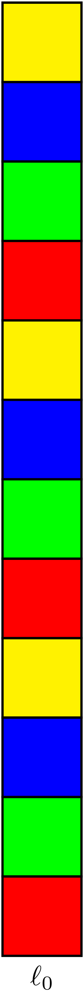
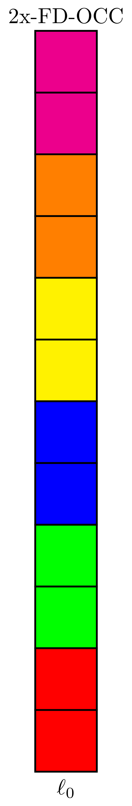
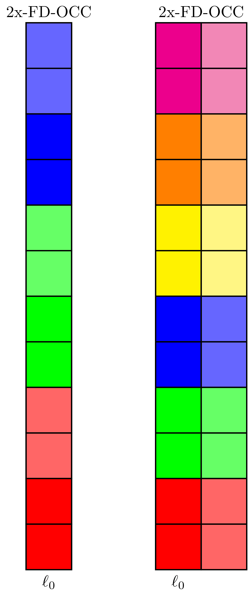
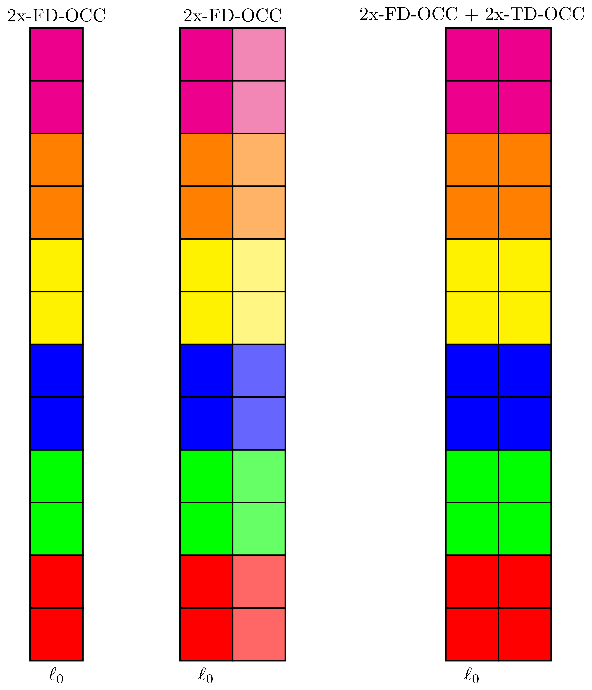
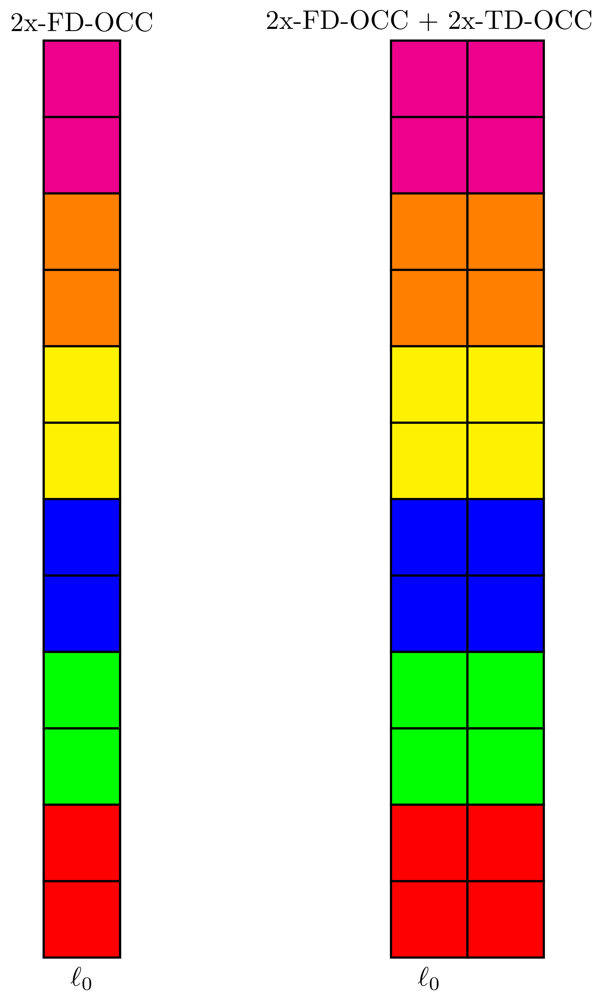
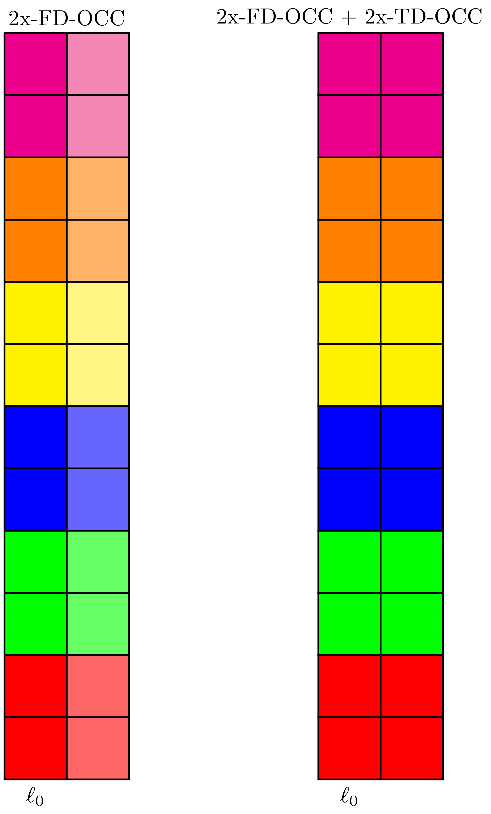
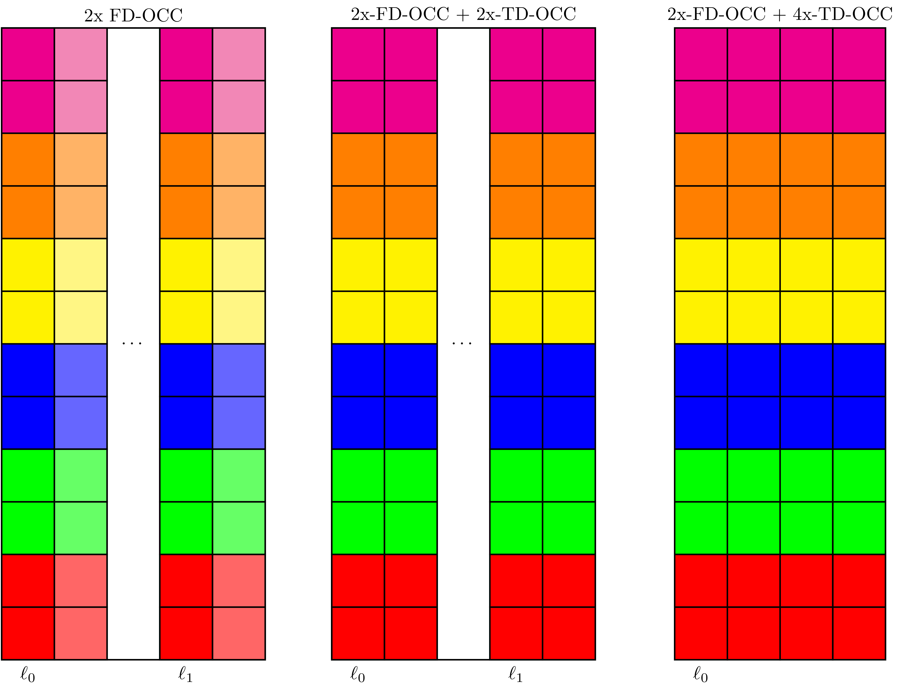

NR - Channel State Information Reference Signal (CSI-RS)
Table of Contents
Introduction
In NR system, channel state information reference signal (CSI-RS) plays a variety of roles, including
- CSI measurement
- Beam management
- Tracking
- Mobility management
- Rate match
Generally, there are two types of CSI-RS, termed non-zero-power (NZP) CSI-RS and zero-power (ZP) CSI-RS, respectively. The former is configured by NZP-CSI-RS-Resource or CSI-RS-Resource-Mobility in CSI-RS-ResourceConfigMobility, while the latter is configured by ZP-CSI-RS-Resource.
Sequence Generation
CSI-RS symbols are a sequence of QPSK-modulated Gold sequence, which is initialized with
\begin{align*} c_{\text{init}} = \left[ 2^{10}(N_{\text{symb}}^{\text{slot}}n_{s,f}^{\mu} + \ell + 1)(2n_{\text{ID}}+1) + n_{\text{ID}} \right] \mod 2^{31} \end{align*}where
- \(N_{\text{symb}}^{\text{slot}}\) is the number of symbols in a slot.
- \(n_{s,f}^{\mu}\) is the index of the slot within a frame.
- \(\ell\) is the index of the symbol within a slot.
- \(n_{\text{ID}}\) is configured by scramblingID or sequenceGenerationConfig.
Resource Mapping
Parameters
Regarding the resource mapping of CSI-RS, following parameters are involved.
- Density \(\rho\) is configured by density in CSI-RS-ResourceMapping/CSI-RS-CellMobility.
- Port number \(X\) is configured by nrofPorts.
- Power offset \(\beta_{\text{CSIRS}}\) is configured by powerControlOffsetSS in NZP-CSI-RS-Resource.
- CDM type is configured by cdm-Type in CSI-RS-ResourceMapping.
- Time-domain location
- Slot-level: period and offset are indicated by CSI-ResourcePeriodicityAndOffset/slotConfig.
- Symbol-level: \(\ell_0 \in \left\{0, 1, \ldots, 13\right\}\) and \(\ell_1 \in \left\{2, 3, \ldots, 12\right\}\) are respectively configured by firstOFDMSymbolInTimeDomain and firstOFDMSymbolInTimeDomain2 in CSI-RS-ResourceMapping/CSI-RS-ResourceConfigMobility.
- Frequency-domain location
- RB-level: the starting position and number are configured by
- freqBand and density in CSI-RS-ResourceMapping, or
- startPRB and nrofPRBs in csi-rs-MeasurementBW in CSI-RS-CellMobility.
- Subcarrier-level: indicated by a bitmap configured by frequencyDomainAllocation in CSI-RS-ResourceMapping/CSI-RS-ResourceConfigMobility.
- RB-level: the starting position and number are configured by
Patterns
In NR systems, 1/2/4/8/12/16/24/32-port CSI-RS are defined. The multi-port CSI-RS are constructed based on 2/4-port CSI-RS using frequency domain (FD) and time domain (TD) orthogonal cover code (OCC). The coordinate of a CSI-RS resource in the resource grid is indicated by a bitmap.
- A single-port CSI-RS resource occupies one RE.
- A 2-port CSI-RS resource occupies 2 x 1 RE's.
- A 4-port CSI-RS resource occupies 4 x 1 or 2 x 2 RE's.
1-port CSI-RS
In case of \(\rho = 3\), there are 4 candidates available, as shown in Figure 1; Otherwise, i.e., \(\rho = 1\) or \(0.5\), there are \(C_{12}^1\) candidates for the subcarrier index.

Figure 1: 1-port CSI-RS (\(\rho = 3\))
2-port CSI-RS
For 2-port CSI-RS, as shown in Figure 2, there are \(C_6^1\) candidates.

Figure 2: 2-port CSI-RS
4-port CSI-RS
As shown in Figure 3, there are \(C_3^1\) and \(C_6^1\) candidates for single-symbol and double-symbol 4-port CSI-RS, respectively.

Figure 3: 4-port CSI-RS
8-port CSI-RS
As shown in Figure 4, there are \(C_6^4\) and \(C_6^2\) candidates for single-symbol and double-symbol 8-port CSI-RS, respectively.

Figure 4: 8-port CSI-RS
12-port CSI-RS
As shown in Figure 5, for single-symbol case, there is only one candidate; while for double-symbol case, there are \(C_6^3\) candidates.

Figure 5: 12-port CSI-RS
16-port CSI-RS
The pattern of 16-port CSI-RS can be shown in Figure 6. There are \(C_6^4\) candidates.

Figure 6: 16-port CSI-RS
24-port CSI-RS
For 24-port CSI-RS, there are \(C_6^3\) candidates, as shown in Figure 7.
Figure 7: 24-port CSI-RS
32-port CSI-RS
For 32-port CSI-RS, there are \(C_6^4\) candidates, as shown in Figure 8.

Figure 8: 32-port CSI-RS
Functionality
CSI-RS for CSI Measurement
Framework
Just as its name indicates, CSI-RS can be used to measure CSI, e.g., CQI, PMI, CRI, SS/PBCH block resource indicator (SSBRI), layer indicator (LI), RI, L1-RSRP.
A UE can be configured with
- \(N \ge 1\) CSI-ReportConfig, in which
- The time domain behavior is indicated by reportConfigType, whose candidate values are aperiodic/periodic/semiPersistentOnPUCCH/semiPersistentOnPUSCH.
- CSI-related or L1-RSRP-related quantities are indicated by reportQuantity;
- Reporting granularity in the frequency domain is indicated by reportFreqConfiguration.
- Time domain restriction for channel and interference measurements (IM) are indicated by timeRestrictionForChannelMeasurements and timeRestrictionForInterferenceMeasurements, respectively.
- Codebook-related configurations are indicated by CodebookConfig.
- \(M \ge 1\) CSI-ResourceConfig, in which
- \(S \ge 1\) CSI resource sets are indicated by csi-RS-ResourceSetList.
- The time domain behavior is indicated by resourceType, whose candidate values are aperiodic/periodic/semi-persistent. All the CSI-ResourceConfig linked to one CSI-ReportConfig have the same time domain behavior.
- The NZP CSI-RS resource(s) for channel/interference measurement and CSI-IM resource(s) for IM corresponding to one CSI-ReportConfig are QCLed with respect to QCL-TypeD.
- One or two lists of trigger states (CSI-AperiodicTriggerStateList and CSI-SemiPersistentOnPUSCH-TriggerStateList), with each trigger state consisting of a list of associated CSI-ReportConfig.
NZP CSI-RS
For each CSI-ResourceConfig, a UE can be configured with one or more NZP CSI-RS resource set(s) by NZP-CSI-RS-ResourceSet, with each consisting of \(K \ge 1\) NZP CSI-RS resource(s).
- All the CSI-RS resource(s) except the NZP CSI-RS resources used for IM within one set are configured with the same density and nrofPorts.
- All the CSI-RS resource(s) within one set are expected to configured with the same startingRB, nrofRBs, and cdm-type.
CSI-IM
A UE can be configured with one or more CSI-IM resource set(s) by CSI-IM-ResourceSet, with each consisting of \(K \ge 1\) CSI-IM-Resource, in which
CSI-RS for Tracking
In NR system, a single-port CSI-RS is used as tracking reference signal (TRS), targetting for time/frequency tracking.
- Periodic TRS is essentially a periodic CSI-RS resource set, which is configured by high layer signalling.
- Aperiodic TRS has the same structure as periodic TRS. The difference lies that it is triggered by downlink control information (DCI).
CSI-RS for Rate Match
In NR system, zero-power (ZP) CSI-RS can be used for rate match, which is exclusive for PDSCH transmission. There are 3 types of ZP-CSI-RS, periodic, semi-persistent, and aperiodic.